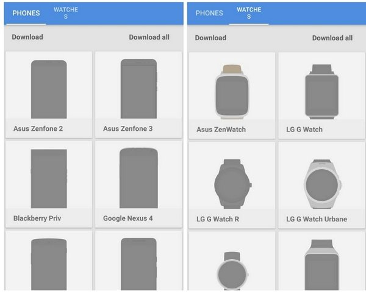
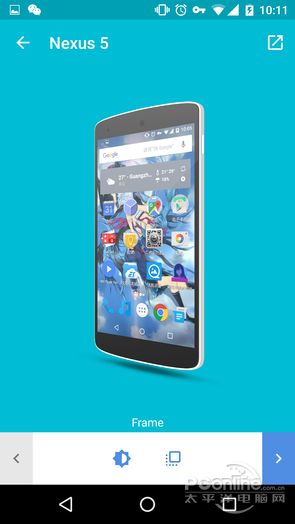

截图套壳工具怎么选？Screener 在同类里的位置
把 Screener 放进截图套壳工具的坐标系里看：它凭什么在手机端站住脚，又在哪些场景下该让位给别的方案。
截图套壳这个活儿，看着简单——把一张 app 截图塞进手机边框里——但做过的人都知道，想出来的图干净、专业、拿得出手，背后有一堆细碎的参数要调：眩光开不开、投影方向、背景纯色还是图片、边框选哪家机型。Screener官网 是我用过的这类工具里，把这件事做"轻"了但没做"糙"的一款，值得单独聊聊。
先拉一个同类工具的格局感。网页端有 Google 官方的 Device Art Generator（Nexus 系专用，两步出图）、Magic Mockups（主打真人场景背景，把截图塞进办公桌、手持手机的照片里）、还有各种在线 mockup 平台；桌面端 Photoshop 加设备样机模板是上限最高的方案，但成本也最高；手机端国内有好几款"带壳截图"类应用，主打在售国产机型壳。Screener 占的格子比较特殊：手机端 + 免费无广告 + 三种边框样式 + 手表边框 + 在线更新边框库，这几个点凑在一起，目前没看到第二款做到。

差异化一：实时渲染让参数调整变成"试玩"
官方功能列表里有一条叫 Live rendering，翻译过来就是实时渲染。听起来像个技术细节，但用起来才知道这是整个工具手感的根基——眩光开关、投影强弱、背景色更换，每个动作的结果直接刷在画布上，没有"应用"按钮，也没有"预览"按钮。
对比一下 PC 上做同一件事的流程：截图导入 Photoshop，抠屏幕、贴边框、做高光图层、投影图层、背景图层，每改一步都要隐藏/显示图层对比效果，改个五版可能就半小时没了。Screener 把这些固化成了参数化的效果开关，实时渲染让"改一版"的时间缩短到秒级。我自己测试过，十种背景色挨个点一遍，效果好就留下，不好就换，整个试错过程不到半分钟。
| 调整项 | 实时渲染的表现 |
|---|---|
| 放入截图 | 选图确认的一瞬，机身"亮屏" |
| 眩光 | 点太阳图标立即看到反光效果 |
| 投影 | 点方形图标立即看到影子 |
| 背景 | 选色、选图、开模糊都是即时生效 |
唯一需要注意的是老设备。实时渲染意味着每次调整都在重新合成图片，配置较低的手机上连续快速调节可能出现短暂卡顿——这是性能瓶颈，不是应用卡死。
差异化二：手表边框是独一档的加分项
大部分手机端套壳工具只做手机，少数做得好的加个平板，但手表边框是 Screener 独一档的卖点。如果你做手表表盘开发、或者想给智能手表界面做展示图，Screener 是手机端能找到的唯一选项——不用专门开电脑跑 PS 模板，掏出手机，下载装好就能搞定。
壁纸作者的场景也值得提一下。很多人不知道壁纸发出去没人点，问题往往不在壁纸本身，而在预览图。一张"壁纸铺满画面、中间立着带壳手机"的展示样机，是壁纸社区的标准包装。Screener 的背景图功能就是为这种构图准备的：把同一张壁纸同时设为屏幕内容和背景，打开投影让机身"站"在壁纸上，可选背景虚化让中心的带壳屏幕更突出。整套流程在手机上五分钟就能出一张成品。

差异化三：商用授权给开发者留了后路
这个点很多人忽略，但对开发者来说是定心丸。Screener 的边框素材以 Creative Commons Attribution 4.0 International（知识共享署名 4.0 国际）协议授权——用它制作的图片，无论商业还是非商业用途，在哪里用、怎么用都可以。唯一的限制是不允许修改边框素材本身，但这不影响你放进去的背景图和截图。
完整的授权范围说明在Screener文档里有专门一页，国外评测 AndroidAyuda 也专门验证过这条授权：开发者团队为商业与推广用途授予了全部授权，用 Screener 做出的截图可以任意使用。对做应用商店宣传图、社交推广图的开发者来说，这省去了不少法务上的后顾之忧。
它的取舍：手机端的代价
说了三个差异化优势，也得讲讲选择它要付出什么。
第一，精细操作受限。 手机触屏毕竟不是鼠标加键盘，如果你需要像素级调整边框位置、或者做复杂的图层叠加效果，Screener 的参数化开关就够用了，但上限比不过 Photoshop 模板。PC 端的自由度和上限在这里，Screener 的优势在移动端的便携性和速度，两者的使用场景不一样。
第二，老设备性能瓶颈。 上面提过实时渲染的性能代价——旗舰机流畅跑，两三年前的中低端机连续快速调参数会有短暂卡顿。这个问题没得绕，硬件摆在那里。
第三，边框库有局限。 Screener 主打 Google Pixel 系列和常见的 Android 机型边框，国内在售的某些小众机型覆盖不上。这时候国内那些"带壳截图"类应用反而更对口——它们专门做国产机型壳。
选购结论
最后给个明确的选型建议，不同需求的人对号入座：
- 手机端开发者、独立开发者：首选 Screener。实时渲染的效率、CC BY 4.0 的商用授权、免费无广告，这三点组合起来对你来说就是最优解。
- 手表表盘开发者、壁纸作者：也选 Screener。手表边框独一档，背景图功能做壁纸样机有天然优势。
- 需要真人场景背景的：选 Magic Mockups。Screener 做纯背景路线，把截图放进办公桌、手持手机的照片里这种"场景化"展示是 Magic Mockups 的强项。
- 需要极高上限的：Photoshop 加设备样机模板。虽然慢，但自由度最高，专业设计师的标准工具链。
- 国内小众机型壳需求：国内"带壳截图"类应用。机型覆盖更全，但功能深度不如 Screener。
总结一句：如果你在手机上出图，Screener 大概率还是第一选择。它不是完美的，但在"手机端、免费、功能完整、授权宽松"这个交集里，目前没有对手。关于这款工具的完整资料，我分别托管在三个仓库里——GitHub、Gitee、GitCode 各自同步一份，方便不同网络环境的人取用。